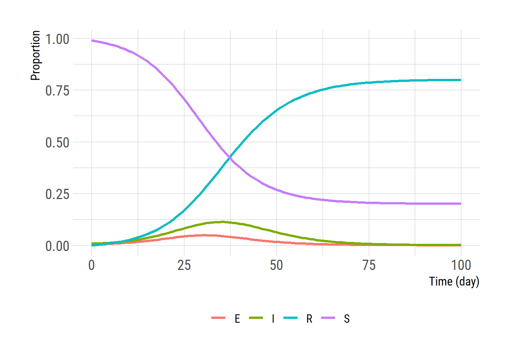

seir_ode <- function(t, y, params) {
# state variables
S <- y[1]; E <- y[2]; I <- y[3]; R <- y[4];
beta <- params[["beta"]] # beta = transmission rate
epsilon <- params[["epsilon"]] # 1/epsilon = latent period
gamma <- params[["gamma"]] # 1/gamma = duration of infectiousness
N <- S + E + I + R # total population size
muSE <- beta * S * I / N # rate from S to E
muEI <- epsilon * E # rate from E to I, i.e., 1/epsilon = latent period
muIR <- gamma * I # rate from I to R
dS <- - muSE # rate of change for S
dE <- muSE - muEI # rate of change for E
dI <- muEI - muIR # rate of change for I
dR <- muIR # rate of change for R
return(list(c(dS, dE, dI, dR))) # return as a list to use deSolve package
}SEIR model
SEIR
deterministic
stochastic
Gillespie’s algorithm
Susceptible-Exposed-Infective-Recovered (SEIR) 모형
SEIR 모형은 잠복기가 어느 정도 긴 감염병 (예를 들어 코로나19)의 전파를 모형하는 데 사용한다. 이번 포스트에서는 SEIR 모형을 만드는 방법을 알아본다. 결정론적 (deterministic) 그리고 확률론적 (stochastic) 방법으로 SEIR 모형을 R언어로 만들어 본다.
Deterministic model
결정론적 모형은 주로 미분식 (differential equation)을 이용하여 구현한다. \[\begin{equation} \begin{split} \frac{dS}{dt} &= - \beta S\frac{I}{N}\\ \frac{dE}{dt} &= \beta S\frac{I}{N} - \epsilon E\\ \frac{dI}{dt} &= \epsilon E - \gamma I\\ \frac{dR}{dt} &= \gamma I \end{split} \end{equation}\]
미분식을 적분하여 SEIR 변수들의 시간에 따른 추이를 살펴보자. 적분은 deSolve 패키지의 ode 함수를 이용한다.
I0 <- 0.01 # initially infected people
y0 <- c(S = 1 - I0, E = 0, I = I0, R = 0) # initial values for state variables
params <- list() # parameter input for the SIR model
params$epsilon <- 0.5
params$gamma <- 0.2
params$beta <- 0.4
tend <- 100 # simulation end time 50 days
times <- seq(0, tend, by = 1) # daily output for 150 days
# ODE integration using the deSolve package
library(deSolve)
library(dplyr) # to use %>%
ode(y=y0, times=times, func=seir_ode, parms=params) %>%
as.data.frame() -> out
library(tidyr) # turn the data into a long format for easier plot
outlong <- out %>% pivot_longer(cols=2:5, names_to = "State")
library(ggplot2)
theme_set(hrbrthemes::theme_ipsum_rc(base_size=14, subtitle_size=16, axis_title_size=12))
extrafont::loadfonts()
ggplot(outlong, aes(x=time, y=value, color=State)) +
geom_line(linewidth = 1.2) +
labs(x = 'Time (day)', y = 'Proportion')+
theme(legend.title = element_blank(),
legend.position = "bottom") 
확률론적 모형
두 가지 방식으로 확률론적 모형을 구현하여 본다. 첫번째는 \(\tau\)-leaping 방법과 유사하나 푸아송 분포 대신 binomial 분포를 사용한다. 푸아송 분포와 달리 상한선이 정해지므로 각 상태 변수가 음수로 가는 것을 막을 수 있는 잇점이 있다. S에서 E로 단위 시간 \(\delta\) 동안 이동하는 수는 아래와 같이 정해진다. \[\begin{equation} \begin{split} \Delta N_{SE} &= \textrm{Binomial}\left( S(t), 1-\textrm{exp}[{-r_{SE}\delta }]\right) \\ S(t+\delta) &= S(t) - \Delta N_{SE}\ \end{split} \end{equation}\] 비슷한 방법으로 \(E\)에서 \(I\) 그리고 \(I\)에서 \(R\)로 변하는 수를 계산하여 아래와 같이 구현한다.
seir_stoch_step <- function (y, params, delta) {
beta <- params[["beta"]]
epsilon <- params[["epsilon"]]
gamma <- params[["gamma"]]
S <- y["S"]; E <- y["E"]; I <- y["I"]; R <- y["R"];
N <- S + E + I + R
rSE <- beta * I / N
rEI <- epsilon
rIR <- gamma
# number of events over the time step, delta, modeled as binomial random variable
nSE <- rbinom(1, S, 1 - exp(- rSE * delta))
nEI <- rbinom(1, E, 1 - exp(- rEI * delta))
nIR <- rbinom(1, I, 1 - exp(- rIR * delta))
dSdt <- - nSE
dEdt <- nSE - nEI
dIdt <- nEI - nIR
dRdt <- nIR
dCEdt <- nSE
dCIdt <- nEI
return (list(c(dSdt, dEdt, dIdt, dRdt)))
}위 함수는 한 번의\(\delta\)동안 변화를 출력하기 때문에 원하는 기간 동안 연속해서 계산하기 위해 아래와 같은 함수를 추가적으로 만든다.
stoch_solve <- function(func, y, times, params, delta) {
# times indicate the times for which we want to see outputs
out <- data.frame(matrix(NA, nrow = length(times), ncol = (length(y)+1)))
out[1, ] <- c(times[1], y)
row <- 2
substeps <- round((times[2]-times[1])/delta)
for (t in 1:(length(times)-1)) {
for (t2 in 1:substeps) {
y <- y + unlist(func(y, params, delta))
}
out[row, ] <- c(t, y)
row <- row + 1
}
names(out) <- c("time", names(y))
return (out)
}위 stoch_solve 함수를 이용하여 계산하고 플롯팅을 해본다. ODE 모형의 결과는 proportion으로 주어져 있으니 1,000을 곱한 후 비교하면 결과가 크게 다르지 않음을 알 수 있다. stoch_solve를 여려 번 실행하여 평균을 비교하면 그리고\(\delta\)을 작게 할 수록 ODE 모형의 결과와 가까워진다.
res <- stoch_solve(func = seir_stoch_step, y=1000*y0, times=0:100, params = params, delta=0.2)
reslong <- pivot_longer(res, cols=2:5, names_to = "State")
ggplot(reslong, aes(x = time, y = value, color = State)) +
geom_line(linewidth = 1.2) +
labs(x = 'Time (day)', y = 'Number')+
theme(legend.title = element_blank(),
legend.position = "bottom") Gillespie algorithm
위에서 기술한 확률론적 방법은 우리가 이미 정한 time interval \(\delta\)에 따라 오차가 발생하는 반면 Gillespie algorithm 을 이용해서 통계적으로 정확한 stochastic simulation 을 할 수 있다.
seir_gillespie <- function(y, params) {
S <- y["S"]
E <- y["E"]
I <- y["I"]
R <- y["R"]
beta <- params[["beta"]]
epsilon <- params[["epsilon"]]
gamma <- params[["gamma"]]
N <- S + E + I + R
event_occurred <- FALSE
tau <- 0
if (I > 0 & S > 0) {## no need to proceed if no one is infectious or no one is susceptible
rate_StoE <- beta * S * I / N
rate_EtoI <- epsilon * E
rate_ItoR <- gamma * I
rate_all <- c(rate_StoE, rate_EtoI, rate_ItoR) # event rates
tau <- rexp(1, rate = sum(rate_all)) # time to the next event
event <- sample(length(rate_all), 1, prob = rate_all) # next event
if (event == 1) {
S <- S - 1
E <- E + 1
}
else if (event == 2) {
E <- E - 1
I <- I + 1
}
else if (event == 3) {
I <- I - 1
R <- R + 1
}
event_occurred <- TRUE;
}
return (list(y = c(S, E, I, R),
tau = tau,
event_occurred = event_occurred))
}seir_gillespie는 한 번의 event 후 결과를 출력하므로 아래와 같이 추가적인 함수를 구성하여 시물레이션을 한다.
run_seir_gillespie <- function(func, tend, y, params, report_dt = 1) {
res <- data.frame(time = 0, t(y)) # store the simulation results
t <- 0
yt <- y
while (t < tend) {
sim <- func(y = yt, params = params) # one event according to the Gillespie algorithm
t <- t + sim$tau
yt <- sim$y
if (t >= report_dt) { # add to the result only when the t is reaches report dt
res <- rbind(res, c(t, t(yt)))
report_dt <- report_dt + 1
}
if (!sim$event_occurred)
break
}
return (res)
}시물레이션 결과를 플롯팅 한다.
res <- run_seir_gillespie(func = seir_gillespie,
tend = tend,
y = y0 * 1000,
params = params,
report_dt = 1)
reslong <- pivot_longer(res, cols=2:5, names_to = "State")
ggplot(reslong, aes(x = time, y = value, color = State)) +
geom_line(linewidth = 1.2) +
labs(x = 'Time (day)', y = 'Number')+
theme(legend.title = element_blank(),
legend.position = "bottom") +
ggtitle("Gillespie algorithm")# ggsave("gillespie.png", gg, units="in", width=3.4*2, height=2.7*2)